就能应用题中公式，显然点
就能应用题中公式，显然点
 、
、 、
、 共线，所以 ，代入公式得 .选 B.
共线，所以 ，代入公式得 .选 B.
|
说明:
非限时完成，实际用时远超两小时.
尚未核对答案，选择题第11题，我的答案与题目选项不完全一致导致无选项，后续验证.
1. ,选 C.
2. 选B.
3. 选D.
4.选B.其实题是有毛病的，谁知道后面和底面有没有孔洞.三视题向来有此通病，不提了.
5. 首先应为奇函数，且在 上函数值取正值，选A.
6. 有 , 且 , ，故 .所以 .选B.
7.长方体对角线 与平面 和平面 所成角分别为 和 .这俩角相等就意味着 ，即是说底面 与正面 是两个全等的矩形，且若设 对角线 长度为1,则 ,从而左右两个侧面为正方形，对角线长 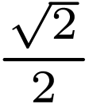，于是 与右侧面 所成角 为45度.选D.
8. 为等边三角形,
，只要计算出
就能应用题中公式，显然点
、、共线，所以 ，代入公式得 .选 B.
9. 设圆锥母线长  ，底面半径 ，底面周长 ,高
，底面半径 ，底面周长 ,高  ，侧面积 ，底面积
，侧面积 ，底面积  ，体积 ，侧面展开圆心角为
，体积 ，侧面展开圆心角为
 ，那么有以下几何关系:
, , , , ，于是记这两个圆锥共同母线长为
，有 ，且 ，因此有 , , , ，所以 . 选C.
，那么有以下几何关系:
, , , , ，于是记这两个圆锥共同母线长为
，有 ，且 ，因此有 , , , ，所以 . 选C.
10.点 ,设 , ，则 ，即 ，代入 求得，所以,离心率. 选 A.
11.题目即是要求
在 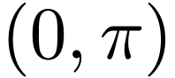
上有且只有两个零点，且
在
上有且只有三个零点.首先
不能满足题目要求，若
，则 ，那么区间 应包含  、
但不能包含 ，且应包含
、
但不能包含 ，且应包含  、、
但不应包含
、、
但不应包含  ，所以 ，解得 .类似的，若 ，则
，所以 ，解得 .类似的，若 ，则  ，那么区间
应包含 、0 但不得包含 ，应包含 、、
但不得包含 ，所以 ，解得 ，所以最终
的取值范围是 .答案C只有一半?.
，那么区间
应包含 、0 但不得包含 ，应包含 、、
但不得包含 ，所以 ，解得 ，所以最终
的取值范围是 .答案C只有一半?.
12. 由 知  ，从而 .再由 得 .
接下来需要比较
，从而 .再由 得 .
接下来需要比较  与
与  的大小，再由
得 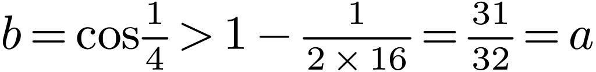，所以最终.选A.
的大小，再由
得 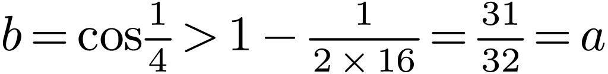，所以最终.选A.
13. 10.
14. .
.
15.总共选法有 种，共面的情况以下几种，6个面的顶点共6种选法，三个方向的六组对棱所在面的顶点共6种选法，所以概率.
16. 作高线 .
. 为垂足，则易知 =1,
为垂足，则易知 =1, ，设 ，则 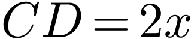,
于是 ，而.
所以
，设 ，则 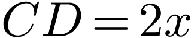,
于是 ，而.
所以
等号在 即
时取得，即 .
.
17. (1)当 时，由 及 ，两式相减即得 .
(2)设 , 则由 得 得 . 故而 . 而
可见当 或  时,
时,  有最小值 .
有最小值 .
18.(1)易得  ，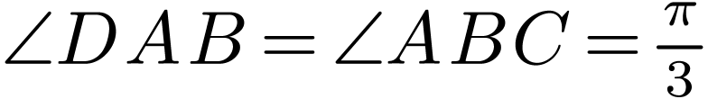,从而 ，因此，同时有，因而垂直于面
，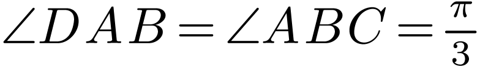,从而 ，因此，同时有，因而垂直于面  ，从而 .
，从而 .
(2).过 引
的垂线，垂足为  ，连接 ，再过
引
垂线，垂足为
，连接 ，再过
引
垂线，垂足为  ，则由 及 知
垂直于面，从而
垂直于 ，而 ，故而
垂直于面 ，所以 就是
与面
所成的角.在 Rt
中, , ..
，则由 及 知
垂直于面，从而
垂直于 ，而 ，故而
垂直于面 ，所以 就是
与面
所成的角.在 Rt
中, , ..
19.(1). 设随机变量 ，当甲校在第  个比赛项目中获胜时
，否则 . 于是, ,
个比赛项目中获胜时
，否则 . 于是, ,  , ,
且三个随机变量相互独立，而甲校总得分是
.
乙校总得分则为 .甲校得冠军的充分必要条件是
，即 .于是三个随机变量至少要有两个为1.
所以获取的概率为 .
, ,
且三个随机变量相互独立，而甲校总得分是
.
乙校总得分则为 .甲校得冠军的充分必要条件是
，即 .于是三个随机变量至少要有两个为1.
所以获取的概率为 .
(2). 在 (1) 中交换 和
的意义，有 ，由于
的所有可能取值为 0, 1,
2, 3，所以
的所有可能值为 30, 20, 10, 0
 .，故 的布列为
.，故 的布列为
|
0 |
10 |
20 |
30 |
|
0.16 |
0.44 |
0.34 |
0.06 |
的期望为 .
20.(1). 有 , , ，故  ，抛物线的方程为
.
，抛物线的方程为
.
(2). 设直线
的方程为 .
代入抛物线方程得 ，于是 , . 而
, .直线  的方程为 ，即 .
代入抛物线方程得 , 即 ，即 ，于是 ，同理有 ，所以 ，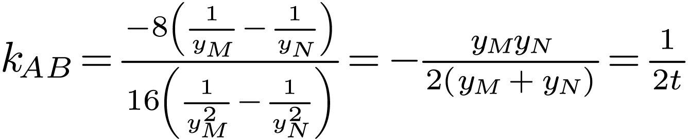
的方程为 ，即 .
代入抛物线方程得 , 即 ，即 ，于是 ，同理有 ，所以 ，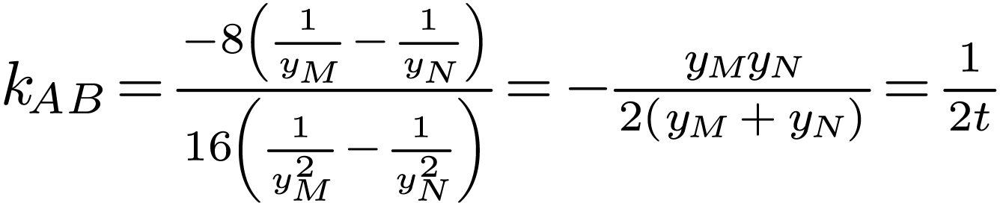
所以 . 等号当且仅当 即 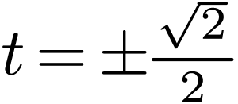 时取得.在 时，直线 与抛物线联立的方程为 ，解得 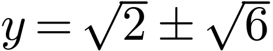. 即 , ，从而 , ，此时直线 方程为 . 同理可求得当 时直线 的方程为 .
21.有 ，.易得 . 有 .同时 有 .故  在
在  上
且严格递减，在 上
上
且严格递减，在 上  且严格递增.
且严格递增.
(1)由上述分析知
在  时在
时在  处取最小值，所以只需要
即可，得 .
处取最小值，所以只需要
即可，得 .
(2) 显然  与
与  分居 1 的两侧，设 ，只需要证明
. 作函数 . 有 , 其导数
分居 1 的两侧，设 ，只需要证明
. 作函数 . 有 , 其导数  . 易知 ，且 且 有 ，故 在
. 易知 ，且 且 有 ，故 在  上严格增加，并且 有 ，而 有 .因此
上严格增加，并且 有 ，而 有 .因此  ，也就是 ，从而
，也就是 ，从而  ，由于 且 ，由
单调性即有 ，即 .
得证.
，由于 且 ，由
单调性即有 ，即 .
得证.
22.(1). 两立两式消去  得 ，即
得 ，即  的普通方程为 ，注意这里只有半支抛物线.
的普通方程为 ，注意这里只有半支抛物线.
(2). 同样消去 得 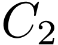 的普通方程为 . 对于 ，直角坐标系下的方程为
.联立 与 得 ，求得 或
.所以 与 交点为 与 .
同理联立 与 的方程得 得
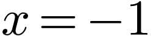 或 ，即 与 交点为 与 .
23. (1) 由基本不等
即得 .
故得  .
.
(2) 有 ，于是
即 .